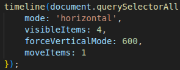
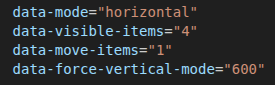
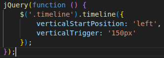
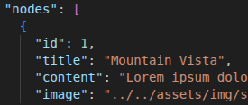

Getting Started
Quick start examples: basic HTML + single-line JS/jQuery init. CDN and local-dev snippets included.
Inline Data Attributes
Learn how to use inline data attributes on your timeline HTML element to modify settings.
jQuery Usage
Learn how to use Jquery to initialize your timeline. (This method assumes you have the jQuery library loaded)
Using a JSON File
Learn how to create timelines using an external JSON file to store your data.
JSON Timestamps

Learn how to format JSON timestamps for your timelines using the correct ISO 8601 date string format.
Advanced Usage
Use a combination of methods and Javascript to generate timelines. Requires knowledge of Javascript!
SwiperJS Add-On
Learn how to include SwiperJS as an add-on which works with Vanilla Timeline on touch screen devices.